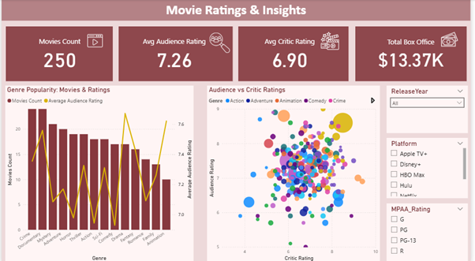
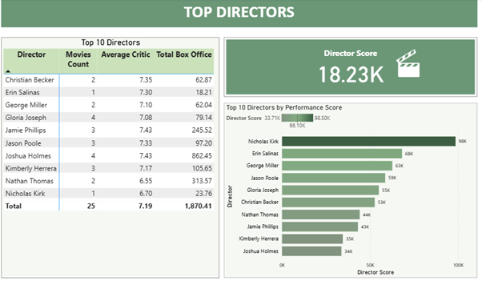

Interactive Power BI analysis of audience and critic ratings, genre popularity, and director performance.
1. Introduction Problem Statement
The film industry relies heavily on understanding both audience and critic reception. However, ratings data is often scattered across platforms, making it difficult to analyze trends, compare performance across genres, and evaluate the success of directors. This project combines multiple data points into an interactive dashboard to uncover insights about ratings, popularity, and performance drivers.
2. Project Objectives
Compare audience ratings vs. critic ratings across movies
Study genre popularity based on ratings and film counts
Rank top-performing directors by ratings and box-office success
Provide interactive visual storytelling for audience insights
3. Tools & Techniques
Excel → Data cleaning & preparation (genres, ratings, director names)
Power BI → Data modeling, visualizations, and dashboard creation
DAX → Measures: Average Audience Rating, Average Critic Rating, Genre Popularity Index, Director Ranking
4. Key Features of the Dashboard
KPI Cards Show Average Audience Rating, Average Critic Rating, Top Genre
Bar Chart Audience vs. critic ratings by genre
Scatter Plot Correlation between critic & audience ratings
Ranking Table Top directors by ratings
Design includes interactive filters for genre, release year, and rating type.

Figure 1. Dashboard Overview
5. Data Insights
Audience vs. Critics → Action & Comedy rated higher by audiences; Drama & Documentary by critics
Genre Popularity → Action and Comedy dominated volumes; Drama consistently high with critics
Director Performance → Some directors excelled across both audience and critic ratings

Figure 2. Top Directors
6. Impact / Real-World Value
Studios → Align strategies with genres performing well with both groups
Directors/Producers → Benchmark their work against industry averages
Streaming Platforms → Identify genres & directors that attract viewers
This project demonstrates how data analysis + visualization can generate insights into the film industry. By comparing ratings, studying popularity, and ranking directors, the dashboard offers a clear picture of how audiences and critics perceive movies.